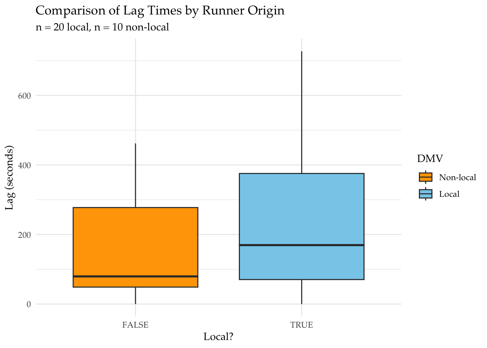
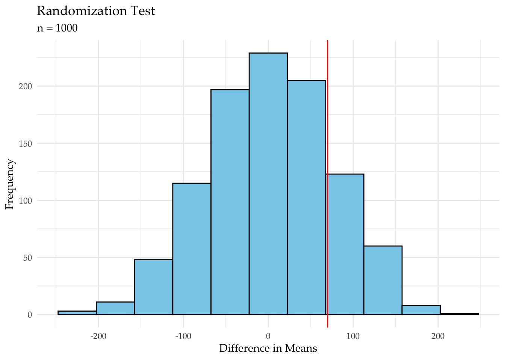
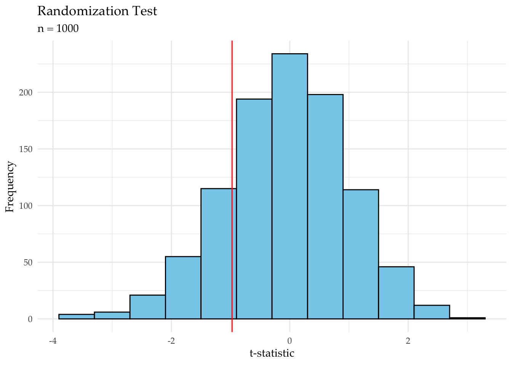
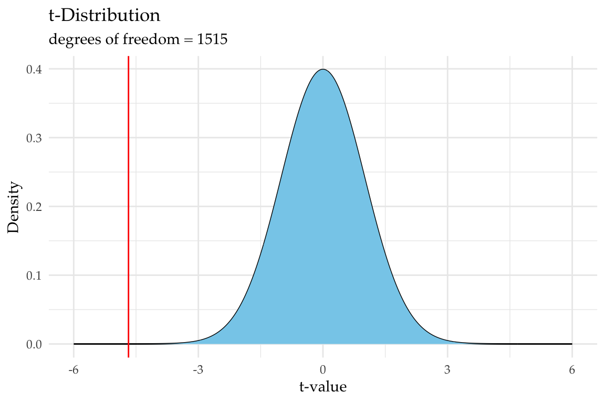

Comparing Start-Line Positions of Local and Traveling Runners
Author
Thomas Matheis
Published
April 21, 2025
(Theoretical) Request for Funds
To detect a meaningful difference of 80 seconds in lag between local and non-local runners, assuming a standard deviation of about 160 seconds, funding sufficient for a total sample size of approximately 126 runners (63 local and 63 non-local) is requested. This calculation is based on achieving 80% power with a significance level of \(\alpha\) = 0.05. The value 80 was chosen based on the thought that 80 seconds of lag would be enough to make a difference in race placements for a majority of competitors.
Introduction
When thousands of runners gather for large races, many competitors are forced to start farther back from the starting line than others, often taking up to four or five minutes just to reach the initial starting line. During the Cherry Blossom Ten Mile Run held in Washington D.C. every April, most runners experience at least some delay from when the race starts until they cross the starting line, a result of the massive number of people participating in the event. Usually referred to as lag, this delay can be influenced by several things, for example, their skill level, or more importantly, their position from the starting line.
Though the starting position very obviously affects the time it takes to reach the starting line, what is not immediately obvious are the factors that determine the starting position for each individual. One factor in particular that may influence a runner’s starting position is how local they are. For example, many runners in this specific race live in the surrounding area, which consists of Washington D.C., Virginia, and Maryland, while thousands of other competitors have to travel from farther states or countries. If a runner lives closer, they may end up arriving earlier than other competitors and be more familiar with the surrounding area, starting closer to the front. On the other hand, due to their proximity to the race, they may simply participate just for fun and start closer to the back. Runners that are not local may be unfamiliar with the location and end up starting closer towards the end of the pack, but if they are dedicated enough to fly or drive hours to the race, their dedication might lead them to start right at the front.
Focusing on these two groups of competitors, local and non-local runners, this project will investigate whether runners start a race in significantly different positions depending on how local they are, measured by their starting lag. After comparing a sample of runners from a prior Cherry Blossom Race, we will be able to come to a conclusion regarding any differences in starting position that may be found. Section 2 of this project describes the methods and details of the sample being used, along with various visual summaries of the data set. Section 3 presents the results, using statistical analysis and inference to determine the implications it has on the overall investigation. Section 4 provides a conclusion to this project, summarizing the findings and providing an insight into possible errors and future directions of this topics.
Methods
To gather sufficient information to make any claims about the relationship between locality and starting position, data from the 2005 Cherry Blossom 10 Mile Run was used. The data set includes variables consisting of each runner’s state/country of residence, total time, net time, age, and sex. Total time measures the time from when the starting gun was fired to when the runner crossed the finish line, while net time measures when the participant first crossed the starting line to when they crossed the finish line. We are interested in a separate variable known as lag, which can be calculated by subtracting net time from total time. Overall, a large lag indicates a further position from the starting line, while a smaller lag indicates a closer starting position. In order to quickly identify the locality of a runner, we divided runners into two groups, where local runners were those from Washington D.C., Maryland, or Virginia, and non-local runners were all the remaining individuals. Our sample from the data set consisted of 30 runners, where 20 observations were local runners and 10 were non-local runners. The sample was randomly selected from the data set to minimize any potential bias.
The visual below displays the distribution of lag in both the local and non-local groups. The blue box plot represents the local runners while the orange box plot represents the non-local runners:
Show the code
#Utilizing a given data set "TMR.mini"ggplot(TMR.mini, aes(x=DMV, y=lag, fill=DMV)) +geom_boxplot() +labs(title="Comparison of Lag Times by Runner Origin",subtitle ="n = 20 local, n = 10 non-local",x="Local?",y="Lag (seconds)") +scale_fill_manual(values=c("orange","skyblue"),labels=c("Non-local","Local")) +theme_minimal(base_family ="Palatino")

Before performing any statistical analysis, some observations can still be made. First, it can be seen visually that local runners appear to have higher lag, indicating a further starting position and more variability. Non-local runners seem to have a lower median and smaller spread, potentially indicating less variability among non-local runners. Still, the exact distributions remain unclear, and cannot be determined without further analysis.
Because our investigation is dependent on two independent groups, local runners vs. non-local runners, we can compare them using their sample means, which after computing we get two values:
Based off of our sample means, it looks like local runners tend to start farther from the starting line, but we do not know anything for sure yet. We will perform statistical analysis in section 3 to determine whether or not these values are significantly different enough from each other to conclude that local runners start noticeably closer to the starting line than non-local runners.
Additionally, though our sample was selected at random to reduce the potential for any bias to occur, some limitations still exist. For example, because of the small sample size consisting of only 30 runners from one specific road race, our ability to generalize any findings to the population of all runners or even another race is limited. Additionally, because the groups within our sample are even smaller, with non-local runners only having 10 observations, assumptions depending on the Central Limit Theorem may be questionable. Because of this, we will first conduct randomization tests to understand how far apart the means of the two groups might be under the null-hypothesis. After that, we will be able to gain a deeper understanding about the significance of our two means in relation to our investigation, without having to make any assumptions about the distribution of our data.
Data Analysis
The goal of this analysis is to determine whether local runners start further behind the starting line than non-local runners, as measured by their lag. A higher lag means a runner started further back, while a lower lag means a runner began closer to the starting line. Our null hypothesis and alternate hypothesis can be written as:
\[H_0: \mu_{local} = \mu_{non-local}\]\[H_A: \mu_{local} > \mu_{non-local}\] Or, because we will be looking at the differences between two means, it is more appropriate to state the hypotheses in terms of the mean difference:
\[H_0: \mu_{d} = 0\]\[H_A: \mu_{d} > 0\]
The null hypothesis states that runner locality has no effect on the starting position, while the alternate hypothesis states that local runners have a greater average lag time and therefore start farther away than non-local runners, which we have chosen after observing \(\bar{X}_{local} = 229.45 \text{ seconds}\) and \(\bar{X}_{non-local} = 159.70 \text{ seconds}\).
To compare lag times between local and non-local runners, one might initially think to use a two-sample t-test. However, this method is dependent on the assumptions that the sampling distribution of the group means is approximately normal and that the variances are not drastically different. In our case, these assumptions are questionable due to our small, unequal sample sizes of only 20 local runners and 10 non-local runners, and the skewness of our data, as observed in the histograms of our observations below:
It can clearly be seen that both groups are right skewed, due to a floor at 0, and have small sample sizes, suggesting that we cannot assume that their distributions are normal. Another way of thinking of the distribution is to consider that more runners will be densely centered around the starting line, while there will be less runners the farther back from the starting line we travel. In order to avoid possibly incorrectly assuming normality, we should not use a theory-based two-sample t-test.
Because of these concerns, we will instead perform a randomization test. This approach does not rely on the assumption of normality and instead simulates the null hypothesis directly by randomly assigning the “local” and “non-local” labels to the observed lag times, preserving the group sizes. We then compute and keep track of a test statistic for each shuffled data set, generating a null distribution of the chosen test statistic.
The first approach we will use will involve performing a randomization test using the differences of the mean lag for each group. Our observed difference of the sample means was:
\[\bar{X}_{local} - \bar{X}_{non-local} = 229.45 - 159.70 = 69.75\] After performing a randomization test of 1000 permutations, we can plot a histogram of each \(\bar{X}_{local} - \bar{X}_{non-local}\), with the red line marking our observed difference:
Show the code
#Utilizing a given data set "null.sim"ggplot(as.data.frame(null.sim), aes(x = null.sim)) +geom_histogram(binwidth =45, color ="black", fill ="skyblue") +geom_vline(xintercept =69.75, color ="red") +labs(x ="Difference in Means",y ="Frequency",title ="Randomization Test",subtitle ="n = 1000" ) +theme_minimal(base_family ="Palatino")

Our histogram of the differences of the means appears to follow the normal distribution, giving us our null distribution, and \(\mu_d\) does appear to be centered around 0. However, our observed value does not seem to be very odd of a result under the null hypothesis.
To determine whether or not our observed difference is plausible under the null, we can now compute a p-value by finding the number of times our simulation returned a value greater than or equal to 69.75. If \(p < 0.05\), we will reject \(H_0\).
With a p-value of 0.177, the probability of observing a difference of the means of lag time between local runners and non-local runners of 69.75 or greater under the null hypothesis is about 17.7%, which is pretty common and could reasonably occur under the null. Because \(0.177 > 0.05\), we fail to reject \(H_0\), and do not have enough evidence to suggest that local runners have a tendency to start farther away from the starting line than non-local runners.
Another way we can use a randomization test in this situation is to perform a randomization test using the t-statistic. Our t-statistic from our observed data can be calculated to find \(t = -0.975\).
Once again shuffling our sample to create a randomization test of 1000 permutations, we can plot the null distribution of our t-statistics on a histogram, marking our observed t-statistics with a red line:
Show the code
#Once again utilizing a given data set "sim"ggplot(sim, aes(x = t)) +geom_histogram(binwidth =0.6, color ="black", fill ="skyblue") +geom_vline(xintercept = observed.t, color ="red") +labs(x ="t-statistic",y ="Frequency",title ="Randomization Test",subtitle ="n = 1000" ) +theme_minimal(base_family ="Palatino")

Once again, our null distribution appears to be normal, though our observed statistic does not seem to be too unusual when simulated under \(H_0\). We can again compute a p-value to determine whether or not we should reject the null hypothesis, rejecting if \(p , 0.05\):
\[p = \frac{\sum (t \le -0.975)}{\text{Total Simulations}} = \frac{178}{1000} = 0.178\] Confirming the results from our first randomization test, we are left with a p-value of 0.178, meaning the probability of observing a t-statistic of -0.975 or less under the null hypothesis is about 17.8%, which means it not uncommon to observe our data under the null hypothesis. \(0.178 > 0.05\), therefore we again fail to reject \(H_0\), and can conclude that we do not have enough evidence to suggest that local runners have a tendency to start farther away from the starting line than non-local runners.
Summary
The goal of this project was to investigate whether local runners tend to have significantly different starting positions in a race compared to non-local runners. We measured this using lag, defined as the difference in time between the official start and the moment a runner crosses the starting line. A higher lag indicates that a runner took longer to cross the starting line, therefore having a starting position farther back. Based on a random sample of 30 runners, where 20 were local and 10 were non-local, we aimed to test whether one group displayed significantly greater lag times.
After calculating the sample means, the local group did have a higher average lag of about 69.75 seconds greater than the non-local group, which pointed to local runners potentially starting farther back than traveling runners. After considering issues such as a small sample size and skewed data, we decided to perform randomization tests instead of a standard two-sample t-test. We used randomization tests to simulate the null hypothesis directly without having to depend on the assumption that are data was normal. After considering our sample mean where local runners had a higher average lag time, we decided to use a directional hypothesis, where the average lag time for local runners was greater than the average lag time for non-local runners.
We performed two types of randomization tests, the first one based on the difference in the means of the two groups and the other using the t-statistic. Both methods resulted in the same conclusion, that our observed data did not significantly deviate from our simulated data. The one-sided p-value for the mean difference test was 0.177, along with 0.178 for the t-statistic test. These values tell us that in the world where local runners and non-local runners have the same average lag time, we would see data as extreme or more extreme than our observed data about 18% of the time. Since our observed data has almost a 1 in 5 chance of occurring under our simulated data, we fail to find enough statistical evidence to conclude that local runners start farther from the starting line than non-local participants. This suggests that there may not be any correlation between locality and starting position among runners.
Despite our findings seeming relatively conclusive that no connection exists between the two variables, it is important to take into account the limitations of this project. Because our data consisted of only 10 non-local runners and 20 local runners, our small sample size may not have been enough to detect a meaningful difference in lag time and instead may have been influenced by natural variability. Additionally, as mentioned previously, our sample only included data from a single race, which limits the ability to generalize it to the entire population of runners in other races.
A major way to expand on this project in the future would revolve around gathering enough observations to detect a meaningful difference in lag time. This would also include using an equal amount of observations for both local runners and non-local runners, since our sample had twice as many local participants. Utilizing data from various other races would also be greatly beneficial, as it would allow us to generalize our findings to a larger population of runners. Another factor to focus on in the future is to examine the relationship between starting position and other variables. For example, younger runners may be more likely to start farther back, and therefore have greater lag, regardless of where they are from. Finally, it is important to consider the fact that some participants may not get to intentionally choose where they start. For some races, starting position may even be assigned at random, or others may arrive late and be forced to start farther back, once again regardless of if they are a local or not.
Overall, while we were not able to find sufficient evidence to draw a connection between the starting position of runners and where they are from, the project highlighted the importance of utilizing the appropriate methodology when analyzing data. The implementation of randomization tests allowed us to come to a conclusion without relying on assumptions. With future work involving a greater number of observations, it is possible to further investigate the relationship between runners and their starting positions.
Reflection
After completing the analysis using a sample of just 30 observations, we then looked at the entirety of the TenMileRace data set, which contains over 8000 observations. This allowed us to determine whether having an adequate sample size to detect a meaningful difference would provide us with stronger evidence towards our hypothesis.
After calculating the lag and whether or not the runner was local for each observation, we performed a standard two-sided t-test. Despite the possibility that our data may still not be normal, the Central Limit Theorem tell us that \(\bar{X}\) will be normal as long as \(n\) is sufficiently large, and we have 8636 observations now. Contrary to our t-statistic from our small sample, which was -0.975, our observed t-statistic for the entire data set was -4.68, which is massive difference. The histogram below displays the corresponding t-distribution with 1515 degrees of freedom, with the red line representing our observed t-statistic from the full data set:
Show the code
# Load full datasetdata("TenMileRace")## Filter to remove missing values and calculate lagTMR.full <- TenMileRace |>filter(!is.na(net), !is.na(time), !is.na(state)) |>mutate(lag = time - net,DMV = state %in%c("DC", "MD", "VA") # TRUE for local runners )ttest <-t.test(lag ~ DMV, data = TMR.full)t_val <- ttest$statisticdf_val <- ttest$parametert_dist_df <-tibble(x =seq(-6, 6, length.out =1000),density =dt(x, df = df_val))ggplot(t_dist_df, aes(x = x, y = density)) +geom_line() +geom_vline(xintercept = t_val, color ="red") +geom_area(data =filter(t_dist_df, x >= t_val),aes(x = x, y = density),fill ="skyblue") +labs(title ="t-Distribution",subtitle ="degrees of freedom = 1515",x ="t-value", y ="Density") +theme_minimal(base_family ="Palatino")

This is a drastic difference from our original sample of 30 observations, and this time our p-value was calculated to be \(p = 0.00\) with a 95% confidence interval between 13.77 seconds and 33.63 seconds. This means that out of over 1000 permutations of our data, not even one of them had a corresponding t-statistic as extreme or more extreme than our observed value. Additionally we can be 95% confident that the true average difference in lag lies somewhere between about 14 seconds and 34 seconds. This is important to note, as a lag of between 14 and 34 is not large enough to be considered a meaningful difference, though some may argue otherwise. For a majority of runners, a difference of 30 seconds will likely not have a meaningful impact on placement, and would likely go unnoticed over long races.
Though we calculated a p-value of 0, and therefore have strong statistical evidence to believe that local runners start farther back than non-local runners, the difference is not large enough to be significant. This conclusion supports our result from the smaller sample which suggested no significant difference between the two groups, though some may argue that a lag between 14 and 34 could be a deciding factor in the race. This comparison emphasizes how results obtained from smaller sample sizes can still have relevancy towards a much larger population, depending on one’s choice for the smallest meaningful difference. Though we technically made a type II error in our original project, failing to reject a false null, our methodology and conclusion were still correct. We used randomization tests in order to avoid making an assumption about the normality of our data, and our interpretation correctly followed the corresponding results of those tests. Though we did not find evidence proving a significant difference, we did observe a difference in the correct direction, just not a large enough difference to reject with our small sample size. After using the full data set we were able to confirm that the observed trend was real, but the true difference was indeed too small to be considered meaningful after all.
Overall, this reflection further established the importance of sample size and the careful selection of methodology. It also showed that revisiting a project when more data becomes available can lead to a better understanding of the originally published results. Finally, both the small sample and full data set point to the same conclusion: while local runners may start slightly farther back than traveling runners, the difference is not significant enough to suggest a significant behavioral divide.